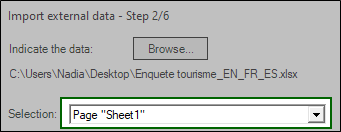
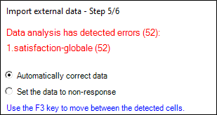
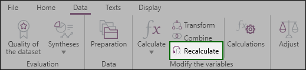

IMPORT external data
This section allows you to import external data present in tab-delimited files (excel, csv, txt..), databases or statistical studies.
To import data from an external source, proceed as follows:
-
From the Home panel, Distribution and Data Collection section, click on Import External Data.
Or from the Spreadsheet, Data tab, click on Import.
-
Select the type of external file to import.
-
Click on Next.
-
Click on Browse... to indicate the data.
NOTE: In the case of an Excel file, you need to select the sheet to use from the Selection drop-down menu.

-
Proceed to the import parameters configuration:
-
Determine the number of rows to ignore at the beginning and at the end.
-
Indicate that the 1st row contains the variable names.
-
Indicate that the 2nd row contains the variable labels.
-
Determine the blank rows to ignore (at the beginning, inside or at the end).
-
Determine the characters to be used to replace the non-responses.
-
Determine the separator to use to identify multiple questions (by default it is the semicolon).
-
-
Assign, ignore or create columns (variables) in your file:
-
Ignore: allows you to ignore the column in question so that it is not imported into Sphinx iQ3.
-
Assign to : allows you to associate the selected column with a variable in your survey.
NOTE: if your column headings correspond exactly to the variable names in your survey, this option will be automatically checked and will automatically propose the variable of your survey with the same name.
-
Create: allows you to create a variable in the survey if the column in your file cannot be associated with a variable in the survey.
NOTE:
- If the column name is colored blue, it means that the variable is directly associated with a variable in your survey (because the variables have the same name)
- If the column name is grayed out, it means that the variable does not exist in the survey. You must either assign it to an existing variable in your survey (the variable exists but the name is different for example) or create it if it cannot be associated with a variable in the survey. By default the variable will be ignored. -
-
In case of possible errors or inconsistencies detected, identify them in order to correct them either by directly modifying your file or:
-
By selecting the option Automatically correct data.
-
By selecting the option Set the data to non-response.

-
-
Choose the option to use depending on the desired import:
-
Create new observations: this option will allow you to create new observations that will be added to the observations already present in the survey.
NOTE: You can delete the observations already present in the survey, be careful this option deletes all your present observations so your survey will only contain the observations imported from your file.
-
Modify the existing observations according to: of the survey using the order of the observations or the unique value to a question as a reference (example: a client code).
If the values of a variable in your data file are different from the values of the same variable in Sphinx iQ3, then the values in the data file (e.g. Excel) will replace the values in your data set in Sphinx iQ3.
-
(Optional) Check the « Create conditions for new values from closed questions » option in order to add new answers (present in your import file) to the closed questions of your survey.
EXAMPLE: In your imported file, a single closed question (Yes/No) has the value "Don't know". This modality will be added as a new modality to your variable in Sphinx iQ3, which will thus propose the modalities "Yes", "No" and "Don't know").
-
(Optional) Check the Recalculate all variables option which allows to automatically recalculate the values of a calculated variable (average between several variables for example).
NOTE: Note that you can restart the calculation of a calculated variable by clicking on the Recalculate button in the Data tab.

-
-
Click on Finish to validate the import of external data into your survey.